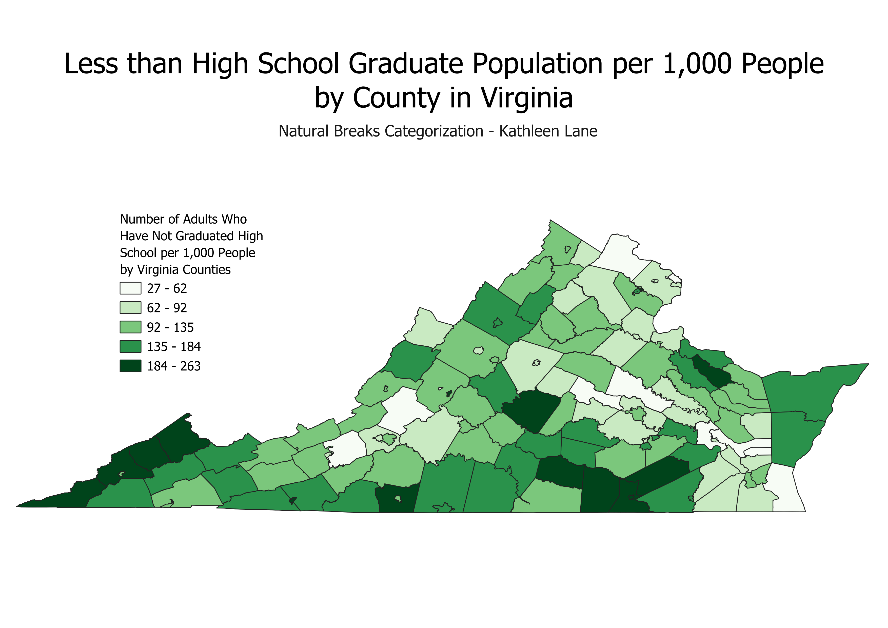
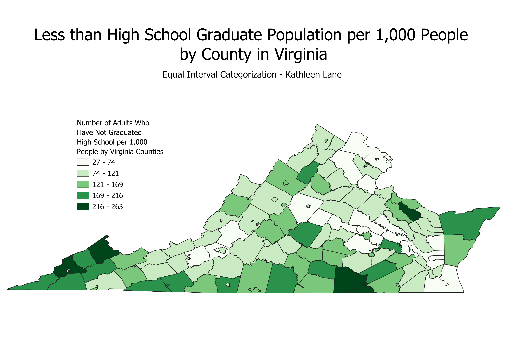
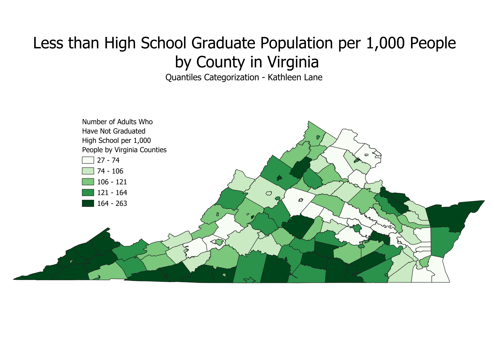

Homework 6 Pt 2: Census data ratios and categories
Kathleen Lane
The ratio that I made is the number of people without a high school degree per 1,000 people by each
county in Virginia. I made this calculation by dividing the number of people without a high school degree
in a county by the total population in that county. I chose to do a ratio because ratios are a better
representation on a choropleth than raw counts. Raw counts will be affected by population and county size.
For example, you would expect a larger county to have more people without a high school degree purely
because there is a larger population in that county. However, ratios allow us to compare two counties by
accounting for the size differences.

The map above shows a choropleth categorized by natural breaks. Natural breaks are a good option for larger datasets
and they help us to see outliers very well. For example, we can see that the dark green counties on this map are the few
counties with the largest population of adults without a high school degree out of all of the counties, a.k.a
outliers. Natural breaks also create a good representation of all classes on a map. Here we can clearly see each
class represented. However, natural breaks creates unequal bin sizes in the legend classes that make it harder to
compare counties in different classes. For example, the bin size of the lightest color legend class is 35, whereas the
bin size of the darkest color legend class is 79.

The map above shows a choropleth categorized by equal intervals. Equal intervals create classes that increase by the
same interval. In this map, the legend classes increase by 47. These even increments solve the drawback of natural
breaks by creating equal and comparable bin sizes while still being a map that exemplifies outliers. We can see that
the dark green counties have exceptionally high proportions of adults without a high school degree. However, you can
see that there are many lighter color counties and that there isn't as great of a representation of all of the
different classes as there is in natural breaks. This issue is because equal interval has the drawback of not being
able to distinguish well between counties with smaller ratios. The biggest drawback with equal interval is that not
all classes are guaranteed to be represented.

The map above shows a choropleth categorized by quantiles. This method puts the values in order and separates them
into 5 quantiles. One pro of the quantiles categorization is that it shows us the distribution around the median
ratio well. You are also able to see representation of each legend class. There are also some drawbacks to this classification.
One drawback is that there can be large fluctuations in between values in the same quantile. Additionally, this classification tends to
not show outliers well. You can tell that it doesn't show outliers well because there are many dark counties in this map
in comparison to the few dark counties in the other two maps.